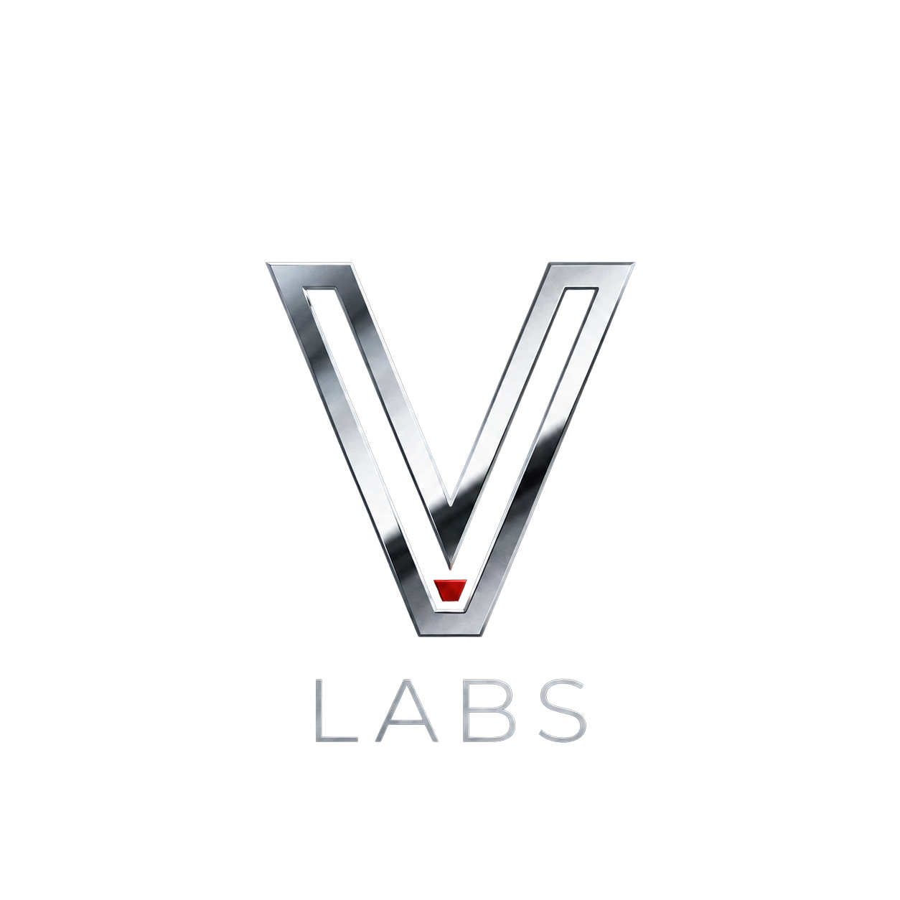

VLabs is my personal forge a space where Fullstack Development meets the complexity of Artificial Intelligence.
From raw code to machine learning models, this is where I document the process of turning chaos into order and data into power. We build, we train, we evolve.
O VLabs é minha forja pessoal um espaço onde o Desenvolvimento Fullstack encontra a complexidade da Inteligência Artificial.
Do código bruto aos modelos de machine learning, é aqui que eu documento o processo de transformar o caos em ordem e dados em poder. Nós construímos, nós treinamos, nós evoluímos.
Estrutura de processamento em Python e Machine Learning. Sistema focado na manipulação e análise de grandes volumes de dados.
Desenvolvimento Fullstack de interfaces de controle. Conectando bases de dados a painéis de alta performance e usabilidade.
Engenharia de prompts avançada e sistemas autônomos. Maximizando a eficiência através da integração de modelos de IA.